In the LLM applications I build, code, not the model, is responsible for the facts. This archive holds the case studies, runnable labs and the evidence behind each claim.
Third-year B.Tech Computer Engineering student, VIT Pune 2024–2028 (expected)
Focus
LLM systems, machine learning, algorithms
Open to
AI engineering internships

Fig. 1 — The initials DC, drawn as a graph. 51 nodes joined by 97 edges form the letters D and C, with a single node as the full stop.51 nodes · 97 edgesSelected work
I — Selected workPlates 01–05p. 02
Five plates from the archive
Each plate opens a case study. Drag the plates or use the buttons; arrow keys work inside the gallery. Swipe sideways or use the buttons.
Three artefacts from inside the projects, and an index of the rest: the brief Kaaran writes for an education officer, the verdicts anyone can check in CertiVault, and the arithmetic behind a ranking.
Every plate links to its source. Figures from the Kaaran demo are synthetic and labelled so.
Pl. 06
A What needs attentionB Why it may be happeningC What to do
Each answer has a one-page evidence brief: what needs attention, why it may be happening, and what to do. Code computes every figure; the model writes the sentences around them.
Live demo captureSynthetic dataCaptured 2026-11-23 from the live demo
Specimen · Pl. 07
SHA-256 fingerprintRSA-2048 signatureQR code
One public check · one of six verdicts
Valid
Tampered
Expired
Revoked
Superseded
Invalid
exists
revoked
superseded
hash match
key pin match
RSA verify
expired
SVG + HTML · original drawing
Pl. 07 CertiVault
CertiVault, six verdicts
Anyone can verify a certificate without an account and gets one of six verdicts. The checks run in a fixed order, so each certificate gets exactly one verdict.
Original drawingCourseworkNo live demo yet
Pl. 08
Keyword · BM25
1 Two days
2 Commute
Semantic · E5
1 Quick charge
2 Commute
Fused · k = 60
Commute0.03226
Quick charge0.01639
Two days0.01639
score = 160 + rankper list, added
Commute: 1/62 + 1/62 = 0.03226
HTML + SVG · computed in the notebook
Pl. 08 Notebook
Rank fusion, worked by hand
Two searches rank the same reviews differently. Reciprocal rank fusion adds 1/(60 + rank) from each list, so Commute, second in both, comes first.
From the notebook: the fusion step in Review Summarizer, a team project with Niraj Chavan · repository by Niraj Chavan
03SmartCare, repository (opens external site)An offline-first symptom checker with rule-based scoring; not a diagnostic tool. Team project with Niraj Chavan · repository by Niraj ChavanRepo
Three small instruments that run the real calculation in your browser. Every state is written to the address bar, so a link reopens exactly what you see.
Kaaran figures are synthetic and labelled so. The tree and averaging benches are demonstrations, not results.
Lab 01 Evidence explorer
3 flagged clusters · EN
Synthetic data
01 Question
Education analytics · Synthetic sample
Which block needs the most attention?
02 Analysis
Flagged clusters per block, district sample
03 Finding
Pandharpur has three flagged clusters in the district sample.
04 Evidence
3Inspect 3 clusters
aBhalwad Khurd Kendra11.6 pp
bBhalpur Kendra14.7 pp
cTakangaon Kendra7.4 pp
Bhalwad Khurd Kendra
The decline in mathematics scores across 12 schools was 11.6 percentage points greater than in the rest of the block.
SelectedOutside the rangeHeavier subtreeIn-order keys
Restore the balance.
Choose a node, then rotate its subtree. A balanced AVL tree has a balance factor of −1, 0 or 1 at every node: the height of the left subtree minus the height of the right.
Rotate right at 30 promotes 20. Node 30 has no right child, so it cannot rotate left.
On a node: arrow keys move between nodes, L or R rotates.
Validator · every node, after every move
Node
Height
bf
Check
10
1
0
Within range
20
2
+1
Within range
30
3
+2
AVL-002 · out of range
Moves
No rotations yet. Insertion order 30, 20, 10.
Lab 03 Averaging bench
Global parameter
Illustrative
Fig. L3One aggregation round. Each line’s weight is that client’s share n ÷ N of all samples; the marker on the 0–6 scale is the weighted average the server sends back.Illustrative parameters (1, 3, 5) — not model results
Weighted average
(1 × 1 + 3 × 1 + 5 × 1) ÷ 3 = 3
Each client’s contribution: its share of all samples times its parameter
Client
n
n ÷ N
w
n ÷ N × w
A
1
1/3
1
0.333
B
1
1/3
3
1
C
1
1/3
5
1.667
Total
3
1
3
A · 34%B · 33%C · 33%
Weight the client updates.
Each client trains locally and sends one parameter w. The server weights each update by that client’s share of the samples, n ÷ N, and adds them up.
Client Aw = 1
Client Bw = 3
Client Cw = 5
Use whole numbers from 0 to 9,999.
With every count at 0 there is nothing to weight: N = 0, and the average is undefined.
IV — Research & aboutPapers, patent, backgroundp. 04
In print, and in person.
Research papers, intellectual property and credentials, with links to public records where available.
The research record includes published work and accepted manuscripts.
IV.1 Publications and intellectual property
R.01Conference paper · IEEE · 2026PublishedPresented
Lightweight Handwritten Character Recognition Using EfficientNetB0: Transfer Learning and Augmentation Ablation on EMNIST Balanced
V. Sonwane, D. Chaudhari, R. Chandorkar, A. Chandewar, F. Chaudhari, P. Chandak.
2026 International Conference on Natural Language Processing and Computer Vision (ICNPCV), IEEE, pp. 1–8. Presented at Global Academy of Technology, Bengaluru, 17–18 July 2026.
A System Consisting of Solar Technology with Hydroponics
One of eight co-inventors. Vishwakarma Institute of Technology filed application 2025/09215 on 31 October 2025. The grant was recorded on 24 June 2026.
Kaaran (Team EASY COMPANY, 4 members) was selected for the Build stage (top 30 teams) of the AI for Foundational Learning Hackathon, run by ShikshaNext in collaboration with Anthropic.
I’m a third-year B.Tech Computer Engineering student at Vishwakarma Institute of Technology (VIT), Pune. I build LLM applications where code, not the model, is responsible for the facts.
How I approach a problem
Split the work by what each part can be trusted with: code computes the figures, the language model explains them.
In Kaaran, Claude turns each question into a validated plan and writes sentences with placeholders; pandas code computes every figure, and a deterministic verifier rejects generated text that contains digits, school names or unsupported causal claims.
I start other problems the same way: decide what code must compute and check, let the language model explain the result, and keep a path that still works when the model is unavailable.
Focus
LLM systems, ML, algorithms
Open to
AI engineering internships
Based in
Pune, India
Selected skills
LLM engineering
Claude API with JSON-schema plans, placeholder-constrained generation with deterministic verification, recorded-replay evaluation, RAG over FAISS, local models via Ollama